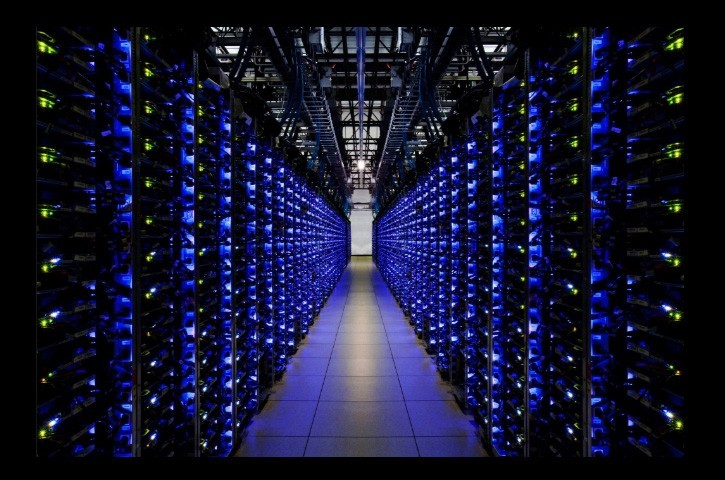
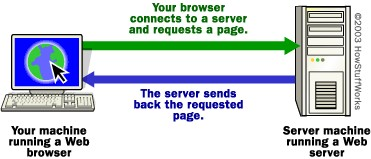
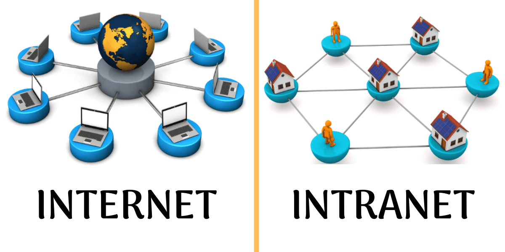

The World Wide Web
The World Wide Web (WWW) is a collection of all the files on the internet. The World Wide Web consists of millions of web servers that store and host the files accessible on it. The World Wide Web organizes all those files and makes them accessible by URL (Uniform Resource Locators). Those files may also be linked via hypertext or hypermedia links. The resources of the WWW can be transferred by HTTP (Hypertext Transfer Protocol, published via web servers and accessed by web browsers. Files on the WWW may be interconnected by hyperlinks.
The Web has made lots of information accessible to users via websites and webpages. They are made of HTML (Hypertext Markup Language) which can be displayed easily by a web browser. Webpages are all stringed together to form a website by a common domain name. Since the invention of the World Wide Web, it has become much easier to access information from all around the globe.
You may be wondering how the web works? First let’s start off with web servers Web Servers are computers that store and transmit the files available on the dark web. For example, when you are viewing a website you are just viewing a HTML file stored on another computer. This computer would be a web server and its sole purpose is to store files and transmit them over the internet. Below is an image of a web server. Most of these web servers are machines dedicated to just storing and transmitting data meaning they don’t look like normal computers and don’t have keyboards or screens.
These web servers store files that are available on the WWW. Server rooms like the one shown in the image are used to hold lots of servers.
These Web servers are connected to the internet and they transmit files over the internet. This allows you to access them even if they are physically located millions of kilometers away. Web servers work in program with client programs which act as messengers between the user and the server. The client software requests files from the web servers as they are requested by the user. Some web servers store encrypted files which can only be accessed through passwords or logins that a user must enter before accessing the file. The client software will manage the login process as well. The are millions of web servers around the world that store all the files that are available on the WWW.
So now you know what web servers are. Let’s go to the next step. Browsers. Browsers are software that can locate access and display a file from the WWW for a user. The web browser can retrieve files from a web browser and display them for you. First the web browser locates the file using the URL and then requests it from the corresponding web server. The web server sends it to the browser over the internet using an internet protocol (Most commonly HTTP). The web browser understands this protocol and converts the file to readable human text and images. Other formats that browsers can display also include HTTPS (Secure HTTP), FTP (File Transfer Protocol) and email (mailto;).
In Summary, Web servers hold files on the WWW. Your browser requests those files over the internet and the web server sends those files to your browser. Your Browser displays this information to you.

This Diagram shows the process of a browser retrieving a webpage
What's the Difference Between the Internet and The World Wide Web?
The World Wide Web is different to the internet in many ways. The internet is the interconnections of multiple local networks. Networks are the interconnection of computers. So, in a sense the internet is basically a giant web of millions of computers. This differs to the world wide web which is the collection of all the files on the internet. The Internet hosts the WWW. Without the internet you wouldn’t be able to use the WWW and without the WWW the internet wouldn’t be of much use. The web servers of the WWW are computers on the internet. That’s why it is possible to access those web servers even though they may be physically located far away.
The Internet is a web of millions of networks and computers that are all connected through physical cables. Your Wi-Fi router is also connected to a physical cable. All computers on the internet are connected to each other. Files can be sent over the internet due to these connections between computers.
The WWW is a collection of all the files on the internet. It is a collection of all the files that the computers on the internet share. When you are accessing a website, you are actually accessing the WWW through the internet. The internet supports the WWW and allows it to function, but the internet is very different to the WWW.
In summary, The Internet and WWW differ because the internet is a connection of all the computers while the WWW is a collection of all the files on the internet. The WWW works on top of internet and the internet supports its function. The WWW makes it possible to use the internet to gain information.
This visual shows that the internet is a connection of all the computers around the world and the web is just the data stored on the internet
Internet vs Intranet
An Intranet is very similar to the internet, but it differs in a few ways.
The Internet is web of networks as defined earlier. An intranet is also a network of computers. An intranet also runs off the internet. An intranet is like a private internet owned by companies. An Intranet allows for sharing and accessing of company files and other documents that the company uses. An Intranet is protected by a firewall and can only by accessed by authorised people via a login in system. Intranets are used by any large corporation and even in the government. They provide safe reliable access to files anywhere just like the internet but on a private platform.
An intranet is not used like the normal internet, it mainly used for file sharing. Anyone on the intranet can see the files on the intranet from anywhere around the world if they are logged in but people on the normal internet would not be able to even locate these files. An intranet still runs on the internet to function.

This diagram shows the key difference between the internet and the intranet. The internet is available to everyone and everyone is connected to it bu tthe intranet is only available to a company and is only used by the company
What are Internet Protocols
Internet protocols (IP) are a set of rules (protocols) that devices follow when sending and receiving data on the internet. For example, if we go back to the browser and web server scenario in which the browser asks for a file from the web server, the browser will use Internet Protocols and so will the web server. The web server will send the data in little packets to the browser’s IP address which is like a phone number. It is unique to each computer. The browser will receive these packets decode them and display them. There are many different Internet Protocols.
- HTTP: HTTP (Hypertext Transfer Protocol) is used when a HTML document needs to be sent over the internet. This protocol is the one usually used on websites and webpages coded in HTML. HTTP protocols are fast to process, and the result can be displayed within the web browser
- TCP/IP: (Transmission Control Protocol) is a type of protocol that manages the transmission of the packets that are sent to their location. The TCP protocol makes sure that all packets are sent and are sent in order. A TCP header is attached to every packet sent and before sending of data the TCP client will connect with the recipient of the data. The recipient will confirm each packet as it arrives and will report any missing packets. The TCP will then resend the packets that were not sent. TCP may take longer to load if there is packet loss because the packets will need to be resent in order again.
- FTP: (File Transfer Protocols) are used when files need to be downloaded from a server, uploaded to a server or moved and copied. These protocols are used for the handling of files. FTP works using 2 communication channels, one for content transmission and one for communication between the devices. One way to initiate a conversation would be to request to download a file. Usually, FTP servers require users to log on but their can be anonymous FTP servers.